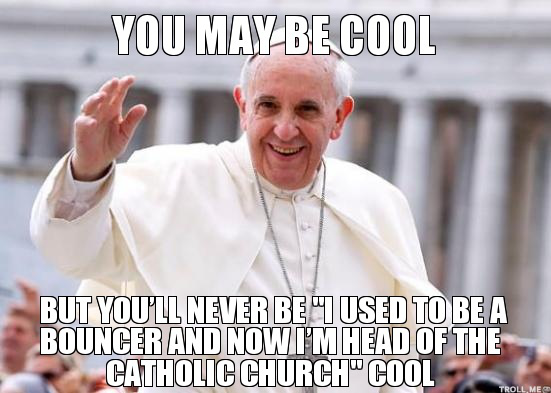
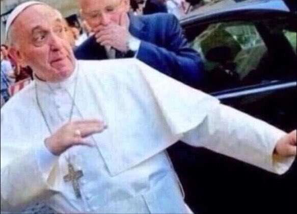
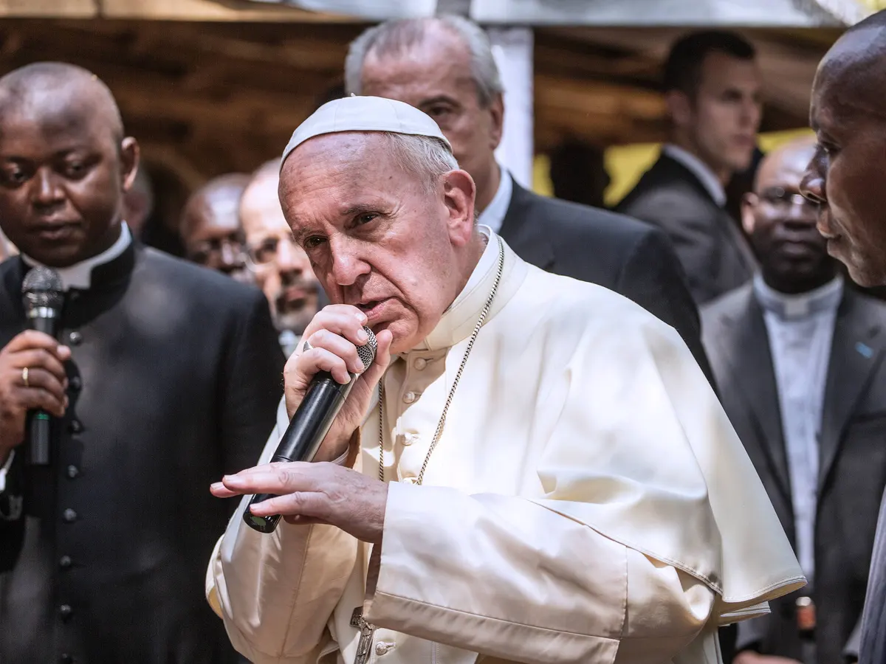
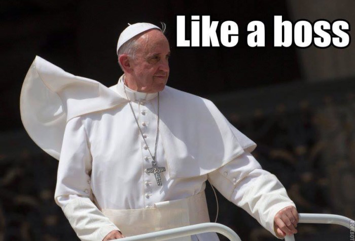

A Pápa kereső segítségével nyomon követhető a Pápa tartózkodási helye. Legyen éppen otthon vagy világkörüli turnén, az oldal által használt, cutting-edge, elosztott információszerzési technikáknak köszönhetően ε3% pontossággal meghatározható, hogy hol tartózkodik az Ecclesia Catholica feje.
És hogy ki is e híres-neves személy, akinek helyzetét az oldalon követni lehet? Olvass tovább, hogy megtudd!
Ferenc Pápáról
Sokak osztoznak abban a véleményben, miszerint az egyház kétezer éves fennállása alatt ő az eddigi legdankebb egyházfő. Jorge Mario Bergoglio, latin egyházi nevén Franciscus, az első pápa az amerikai kontinensről. A Time magazin 2013-ban az év emberének választotta. 1000 év után az első, aki olyan nevet vett fel, amit még egyik elődje sem.
A Pápa nagylemeze
Last time it was this lit God said «let there be light» 🔥
2015-ben Ferenc Pápa saját nagylemezt adott ki, Wake Up! Music Album with His Words and Prayers néven. Az album 11 zeneszámot tartalmaz, melyek Őszentsége egy-egy beszédén alapulnak. A számok műfajban és nyelvben is eltérnek. Található köztük progresszív rock, pop és klasszikus zene is, Spanyol, Portugál, Olasz, Latin és Angol nyelven. Az alábbi számok találhatóak meg az albumon:
Őszentsége íróként és saját maga alakításában is közreműködött filmes karrierje során. Többek között még egy Netflixes produkcióban is szerepelt. Néhány mű a filmográfiájából:
Egy generáció története Ferenc pápa társaságában
In Viaggio: The Travels of Pope Francis
Dank pápás mémek




A Szentszék hivatalának korábbi betöltői
E weboldal, ha az internet felfedezése korábban lehetővé teszi, már a korábbi Szentatyák követését is támogatná. Mivel ez azonban már nem lehetséges, álljanak itt Ferenc pápa legutóbbi öt elődjének részletes adatai.